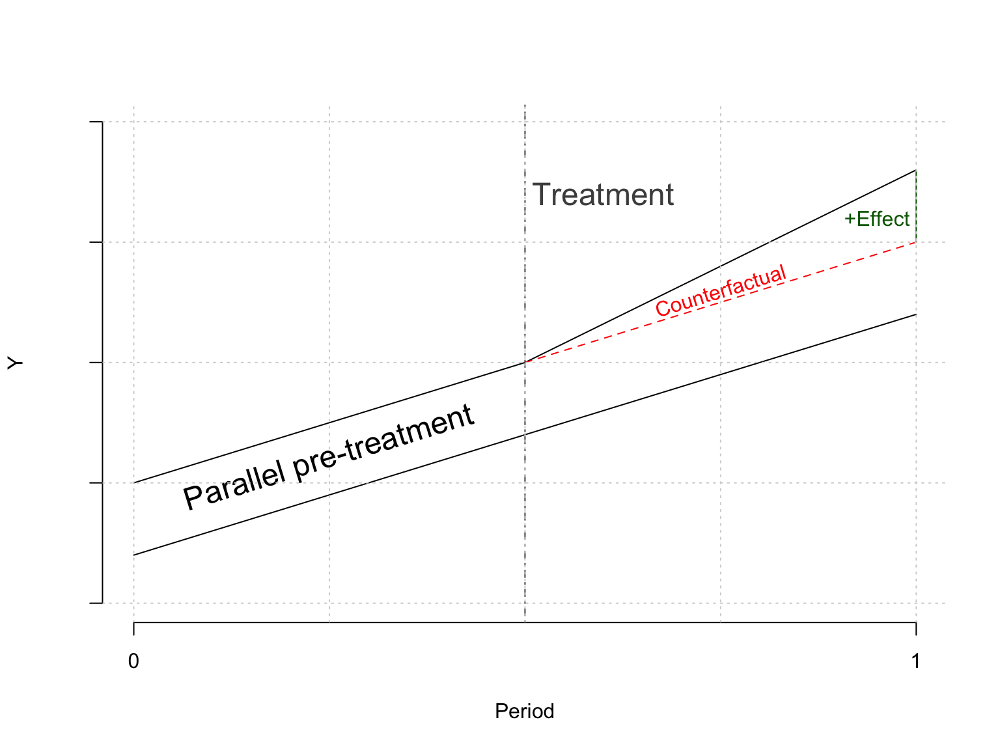
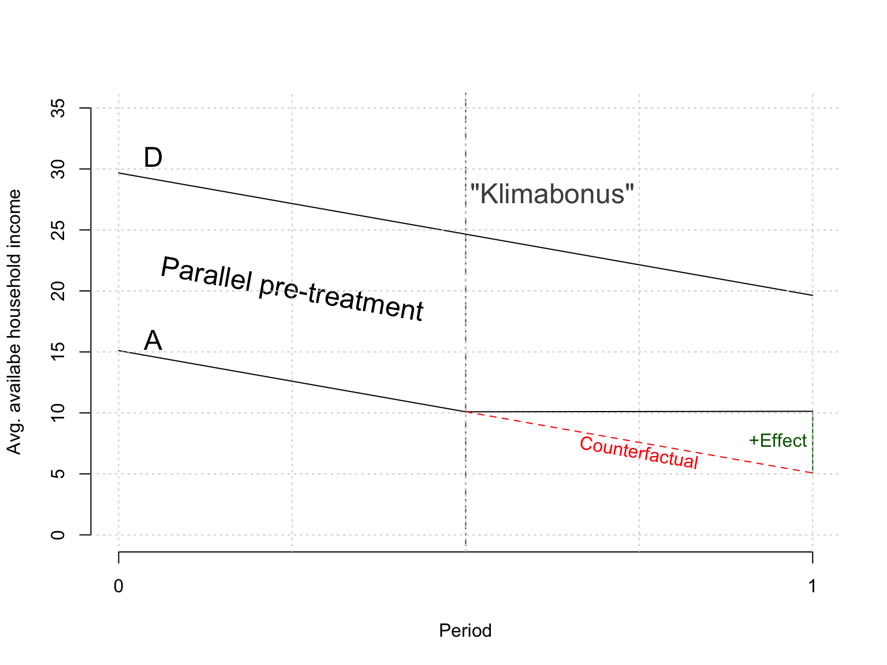
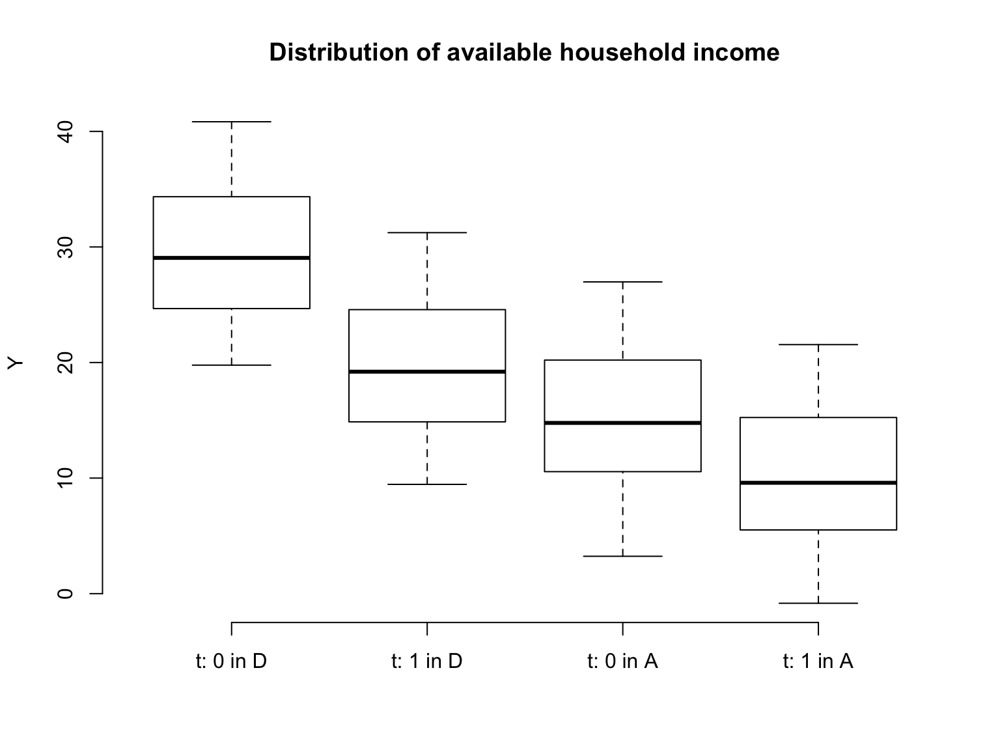

Introduction to Difference-in-Differences estimation
Goal: identification of a causal average treatment effect on the treated (ATT)
Canonical Setup:
Two similar units are observed over two periods
One unit receives the treatment between the first and second period while the other does not
Core assumption: The outcome of interest would have developed in parallel if neither unit had received treatment (referred to as the “parallel trends assumption”). This assumption allows for constant differences in outcomes between units but not differences in changes of the outcome absent treatment.
To express the setup mathematically the potential outcomes framework (Rubin 2005) can be used:
Let \(Y_{i,t}(0)\) be the outcome of unit \(i\) at time \(t\) if that unit has not received treatment and equivalently \(Y_{i,t}(1)\) be the outcome of the unit given it has received treatment. Then the unit level causal effect of treated is given by:
\[
\tau = Y_{i,t}(1) - Y_{i,t}(0)
\]
However, for any combination of \(i\) and \(t\) only one of those outcomes is observed. Using difference-in-differences estimation we infer the unobserved potential outcome based on the never-treated unit. The estimation can be broken up into several parts:
How much has the treated unit (\(j\)) actually changed?
Using the parallel trends assumption \(\delta_{j,0}\) can be inferred using the never treated unit \(k\)\[\begin{align*}
\delta_{j,0} &= \delta_{k,0} = \delta_0 \tag{Parallel trends assumption}\\
&= Y_{k,1}(0) - Y_{k,0}(0) \tag{observed}
\end{align*}\]
The difference in differences estimator is then the difference of those changes
The counterfactual outcome is is identified by assuming the outcomes of the treated and untreated unit would have evolved in parallel had neither of them been treated. Strictly speaking this assumptions allows for an arbitrary absolute difference between the outcomes prior to treatment. However, it can be argued that the assumption of parallel trends becomes less realistic in cases of very large differences since in that case the treated and untreated units are vastly different.
Code
y_j <-c(0.5, 1, 1.8)y_j_counter <-c(0.5, 1, 1.5)y_k <-c(0.2, 0.7, 1.2)x <-c(1,2,3)plot( x, y_k, type ="l", ylim =c(0, 2),xaxt ="n", yaxt ="n",ylab ="Y", xlab ="Period", bty="n" )axis(side=2, labels =FALSE, at =NULL)axis(side=1, at=c(1,3), labels=c("0", "1"))lines(x, y_j)lines(x[2:3], y_j_counter[2:3], lty =2, col ="red")lines(c(3, 3), c(1.5, 1.8), col ="darkgreen")abline(v =2, lty =4, col ="gray30")text(x =1.5, y =0.6, labels ="Parallel pre-treatment", cex=1.5, srt =17 )text(x =2.2, y =1.7, labels ="Treatment",cex=1.5, col ="gray30" )text(x =2.5, y =1.3, labels ="Counterfactual",col ="red", srt =17 )text(x =2.9, y =1.6,labels ="+Effect",col ="darkgreen" )grid()

For statistical inference using observational data the outcomes for treated and untreated units are replaced with their sample averages to identify the ATT. Let \(\bar Y_{tr,\cdot}\) denote the sample average of the units recieving treatment in the second period and \(\bar Y_{nt,\cdot}\) be the equivalent for untreated units1.
To illustrate the capabilities of the model consider two similar countries2 experiencing an economic downturn. Country A is trying to offset the effect on available household income by giving its citizens a “Klimabonus” while country D does nothing. Households in country A still experience a decrease in available household income which leads opposition party F to conclude that government economists are incompetent.
Looking at the difference in differences estimator we conclude that party F is incorrect. The decrease in country A is indeed less severe which leads us to believe the policy was (at least partially) successful (assuming there were no other country specific shocks).
Code
set.seed(1)n_obs <-1000units <-rep(1:(n_obs/2), each =2)unit_fe <-runif(n_obs/2, 0, 20)period <-rep(c(0,1), n_obs/2)period_fe <-rep(c(20, 10), n_obs/2)treatment <-rbinom(n_obs/2, 1, 0.5)y <-5* treatment[units] * period +# tau = 5 period_fe +# time fixed effect unit_fe[units] -# unit fixed effect15* treatment[units] +# constant diff treated/untreatedrnorm(n_obs)data <-data.frame(y = y, treated = treatment[units], period = period, unit =as.factor(units))y_j <-aggregate(y ~ period, data[data$treated ==1, ], mean)$yy_k <-aggregate(y ~ period, data[data$treated ==0, ], mean)$ydelta_y_k <-diff(y_k)y_k <-c( y_k[1], y_k[1] + delta_y_k/2, y_k[1] + delta_y_k)y_j <-c( y_j[1], y_j[1] + delta_y_k/2, # assumed y_j[2])y_j_counter <-c( y_j[1], y_j[1] + delta_y_k/2, y_j[1] + delta_y_k) # assumedplot( x, y_k, type ="l", ylim =c(0, 35),xaxt ="n", #yaxt = "n",ylab ="Avg. availabe household income", xlab ="Period", bty="n" )axis(side=1, at=c(1,3), labels=c("0", "1"))lines(x, y_j)lines(x[2:3], y_j_counter[2:3], lty =2, col ="red")lines(c(3, 3), c(y_j[3], y_j_counter[3]), col ="darkgreen")abline(v =2, lty =4, col ="gray30")text(x =1.1, y =31, labels ="D", cex=1.5)text(x =1.1, y =16, labels ="A", cex=1.5)text(x =1.5, y =20, labels ="Parallel pre-treatment", cex=1.5, srt =-10 )text(x =2.25, y =28, labels ="\"Klimabonus\"",cex=1.5, col ="gray30" )text(x =2.5, y =6.8, labels ="Counterfactual",col ="red", srt =-10 )text(x =2.90, y =7.8,labels ="+Effect",col ="darkgreen" )grid()

Code
boxplot( y ~factor( period, levels =c(0,1),labels =c("t: 0","t: 1") ) +factor( treated, levels =c(0,1), labels =c("D", "A") ), xlab ="", ylab ="Y",frame.plot = F,col ="white", sep =" in ",main ="Distribution of available household income", data)

\(\hat \tau_{did}\) can be computed in R by first calculating the differences in means over time for treated and untreated units separately and calculating the difference in differences.
y_bars <-aggregate( y ~ treated + period, data, mean )delta_ys <-aggregate( y ~ period, y_bars[order(y_bars$period, y_bars$treated),], diff )tau_did <- delta_ys$y[2] - delta_ys$y[1]
\(\hat \tau_{did} =\) 5.064.
Typically, a time/unit fixed effects model is used for statistical inference:
Note that in the estimation shown below the variable “treated” is defined at the unit level. Therefore, \(\mathbb{1}(\text{treated}_{i,t}) \equiv \mathbb{1}(\text{treated}_i) \times \mathbb{1}(\text{period = 1})\).
A linear model with treatment and time dummies identifies \(\tau_{did}\) but is less efficient (especially in case of high variance in outcomes between units). Both models can (eventually3) be estimated using OLS.
Recent developments in the Difference-in-Differences literature
Recent literature (e.g., Goodman-Bacon 2021; Sun and Abraham 2021; Callaway and Sant’Anna 2021) has focused on the case in which multiple time periods are observed and different units receive an absorbing treatment in different periods (referred to as “staggard adoption”). This case is illustrated in the graph below:
In this case it would still seem reasonable to estimate Equation 1 where \(\mathbb{1}(\text{treated}_{i,t})\) now becomes \(1\) at different times for different units. However, Goodman-Bacon (2021) demonstrates that varying treatment timing leads to biased estimates if treatment effects are time-varying due to the fact that already treated units act as controls for later treated units. His difference-in-differences decomposition theorem shows that one essentially estimates a weighted average of multiple canonical difference-in-differences models (as shown above) comparing all treatment adoption groups with each other as well as with never treated units. It can be used to show how much weight is given to the comparisons of different groups.
To eliminate the above mentioned problem with time-varying adoption/treatment effects, Callaway and Sant’Anna (2021) extend the canonical model and define the group-time average treatment effect4\(ATT(g,t)\). A group \(g\) is defined as all units receiving treatment at the same time. For each group \(g\) and time \(t\) a separate average treatment effect is estimated.
A plot of the estimated coefficients for groups adopting treatment in 2004, 2006, and 2007 would look as follows:
The \(ATT(g,t)\) is estimated for both pre- and post-treatment periods. The pre-treatment coefficients not being significantly different from \(0\) has been used as evidence for the parallel trends assumption (extrapolating that this would still be the case in the post-treatment periods if the treatment had not happened). It is well known that this is not a good idea (Altman and Bland 1995; Wasserstein, Schirm, and Lazar 2019). Callaway and Sant’Anna (2021) provide a p-value for a Wald pre-test of the parallel trend assumption at least eliminating the multiple testing problem.
Code
summary(attgt_ex)
Call:
att_gt(yname = "lemp", tname = "year", idname = "countyreal",
gname = "first.treat", xformla = ~1, data = mpdta, est_method = "reg")
Reference: Callaway, Brantly and Pedro H.C. Sant'Anna. "Difference-in-Differences with Multiple Time Periods." Journal of Econometrics, Vol. 225, No. 2, pp. 200-230, 2021. <https://doi.org/10.1016/j.jeconom.2020.12.001>, <https://arxiv.org/abs/1803.09015>
Group-Time Average Treatment Effects:
Group Time ATT(g,t) Std. Error [95% Simult. Conf. Band]
2004 2004 -0.0105 0.0244 -0.0765 0.0555
2004 2005 -0.0704 0.0305 -0.1530 0.0122
2004 2006 -0.1373 0.0391 -0.2432 -0.0313 *
2004 2007 -0.1008 0.0367 -0.2001 -0.0015 *
2006 2004 0.0065 0.0242 -0.0589 0.0720
2006 2005 -0.0028 0.0193 -0.0551 0.0496
2006 2006 -0.0046 0.0171 -0.0510 0.0419
2006 2007 -0.0412 0.0208 -0.0974 0.0150
2007 2004 0.0305 0.0148 -0.0095 0.0705
2007 2005 -0.0027 0.0158 -0.0456 0.0401
2007 2006 -0.0311 0.0190 -0.0826 0.0204
2007 2007 -0.0261 0.0165 -0.0708 0.0187
---
Signif. codes: `*' confidence band does not cover 0
P-value for pre-test of parallel trends assumption: 0.16812
Control Group: Never Treated, Anticipation Periods: 0
Estimation Method: Outcome Regression
In this project I propose a Bayesian estimation framework for the \(ATT(g,t)\). The Bayesian paradigm allows for different treatment of pre- and post-treatment estimation. As we want to show that parameters do not systematically deviate from \(0\) (pre-test for parallel trends) in the pre-period the cautious prior choice is a diffuse prior with a random walk law of motion to allow deviations to accumulate over time and naturally handle missing data:
In order to assess whether the trends deviate substantially the researcher can define a “region of practical equivalence” (“ROPE,” Makowski, Ben-Shachar, and Lüdecke 2019) around \(0\) and easily calculate the posterior probability of being within the ROPE. In addition, if one is uncomfortable with defining a region of equivalence, one can look at the Savage-Dickey density ratio (SDR, Wagenmakers et al. 2010; Dickey and Lientz 1970) to see if the data provides additional evidence (over the prior) for the hypothesis of no pre-treatment trend violations (essentially if the posterior density is higher at \(0\) than the prior density5):
One could then choose \(\underset{t \in [0, T^{pre}]}{arg\ max}\ SDR_t\) and see if the post-treatment effect would still hold if there was a similar trend violation (or a multiple thereof) (similar to Rambachan and Roth 2023).
References
Altman, Douglas G., and J. Martin Bland. 1995. “Statistics Notes: Absence of Evidence Is Not Evidence of Absence.”BMJ 311 (7003): 485. https://doi.org/10.1136/bmj.311.7003.485.
Callaway, Brantly, and Pedro H. C. Sant’Anna. 2021. “Difference-in-Differences with Multiple Time Periods.”Journal of Econometrics, Themed issue: Treatment effect 1, 225 (2): 200–230. https://doi.org/10.1016/j.jeconom.2020.12.001.
Cameron, A Colin, and Pravin K Trivedi. 2005. Microeconometrics: Methods and Applications. Cambridge university press.
Dickey, James M., and B. P. Lientz. 1970. “The Weighted Likelihood Ratio, Sharp Hypotheses about Chances, the Order of a Markov Chain.”The Annals of Mathematical Statistics 41 (1): 214–26. https://doi.org/10.1214/aoms/1177697203.
Goodman-Bacon, Andrew. 2021. “Difference-in-Differences with Variation in Treatment Timing.”Journal of Econometrics, Themed issue: Treatment effect 1, 225 (2): 254–77. https://doi.org/10.1016/j.jeconom.2021.03.014.
Makowski, Dominique, Mattan S. Ben-Shachar, and Daniel Lüdecke. 2019. “bayestestR: Describing Effects and Their Uncertainty, Existence and Significance Within the Bayesian Framework.”Journal of Open Source Software 4 (40): 1541. https://doi.org/10.21105/joss.01541.
Rambachan, Ashesh, and Jonathan Roth. 2023. “A More Credible Approach to Parallel Trends.”Review of Economic Studies 90 (5): 2555–91. https://doi.org/10.1093/restud/rdad018.
Rubin, Donald B. 2005. “Causal Inference Using Potential Outcomes: Design, Modeling, Decisions.”Journal of the American Statistical Association 100 (469): 322–31. https://www.jstor.org/stable/27590541.
Sun, Liyang, and Sarah Abraham. 2021. “Estimating Dynamic Treatment Effects in Event Studies with Heterogeneous Treatment Effects.”Journal of Econometrics, Themed issue: Treatment effect 1, 225 (2): 175–99. https://doi.org/10.1016/j.jeconom.2020.09.006.
Wagenmakers, Eric-Jan, Tom Lodewyckx, Himanshu Kuriyal, and Raoul Grasman. 2010. “Bayesian Hypothesis Testing for Psychologists: A Tutorial on the Savage–Dickey Method.”Cognitive Psychology 60 (3): 158–89. https://doi.org/10.1016/j.cogpsych.2009.12.001.
Wasserstein, Ronald L., Allen L. Schirm, and Nicole A. Lazar. 2019. “Moving to a World Beyond ‘p < 0.05’.”The American Statistician 73 (March): 1–19. https://doi.org/10.1080/00031305.2019.1583913.
Footnotes
The indicator whether treatment has been received by a unit is omitted since \(\bar Y_{tr,1}\) implies treatment has been received while all other \(\bar Y_{\cdot, \cdot}\) imply absence of treatment↩︎
The scenario is completely fictitious and any similarities to actual countries are purely coincidental.↩︎
See e.g., Cameron and Trivedi (2005, 703f.) for details on estimation of fixed effects models.↩︎
Their notation is extremely complicated so I will atempt to present a simplified version↩︎
This has the caveat that a posterior density based on the MCMC draws has to be estimated.↩︎